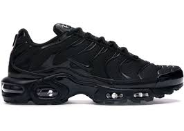
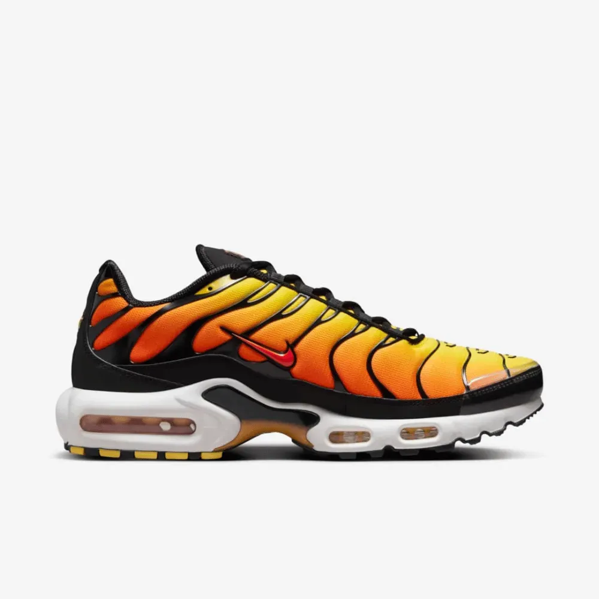
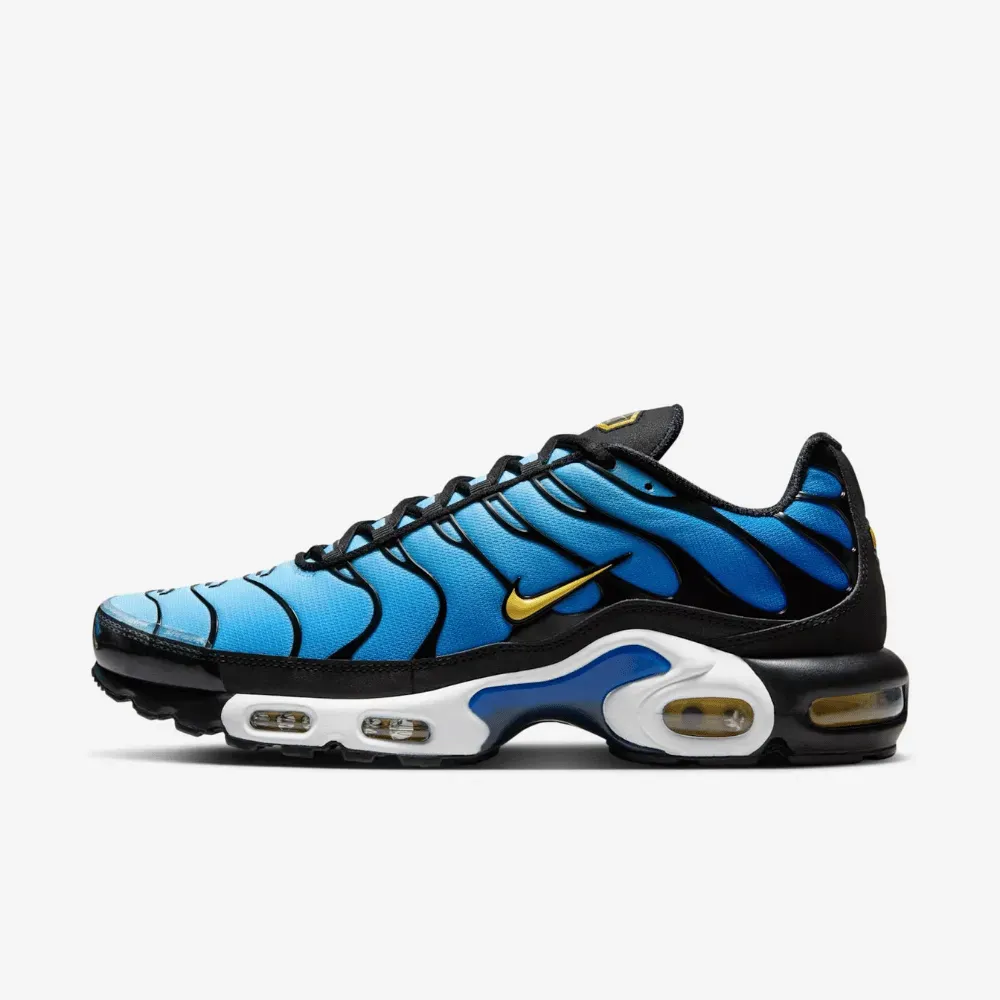
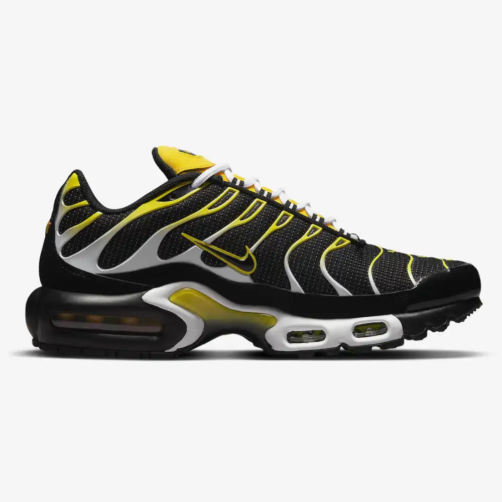
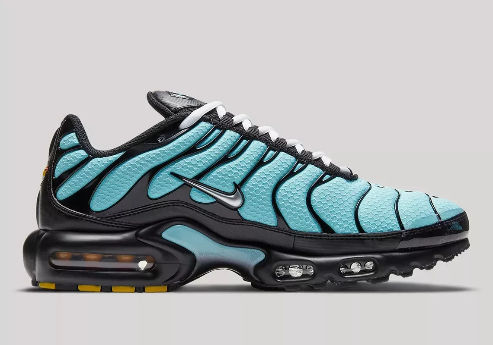

Compre seu TN!!

Descrição: O Nike Air Max Plus All Black combina a silhueta icônica do Air Max Plus com um visual totalmente preto, oferecendo versatilidade e estilo. Com cabedal em mesh respirável e sobreposições de TPU, proporciona conforto e suporte. Equipado com unidades de Air Max visíveis para amortecimento superior.
Preço: R$ 399,90

Descrição: Inspirado no pôr do sol, o Air Max Plus Sunset apresenta um gradiente de cores que vai do laranja vibrante ao vermelho profundo. Coberto com cristais Swarovski, reflete a luz de forma espetacular, tornando-o uma peça de destaque. Possui unidades de Air Max para conforto durante o uso.
Preço: R$ 399,90

Descrição: O Air Max Plus Azul oferece uma combinação de conforto e design arrojado. Com cabedal em mesh e sobreposições de TPU, garante suporte. As unidades de Air Max visíveis proporcionam amortecimento responsivo, ideal para quem busca desempenho e estilo.
Preço: R$ 399,90

Descrição: O Air Max Plus Preto combina design moderno com materiais de alta qualidade. Com cabedal em mesh e sobreposições de TPU, oferece durabilidade. As unidades de Air Max garantem conforto durante o uso diário.
Preço: R$ 399,90

Descrição: O Air Max Plus Raio destaca-se por suas estampas energéticas e exclusivas. Com cabedal em mesh e sobreposições de TPU, oferece suporte. As unidades de Air Max visíveis proporcionam amortecimento, tornando-o ideal para quem busca estilo e conforto.
Preço: R$ 399,90

Descrição: Inspirado nas águas tropicais, o Air Max Plus Aqua apresenta um design refrescante. Com cabedal em mesh e sobreposições de TPU, oferece suporte. As unidades de Air Max garantem conforto, tornando-o ideal para climas quentes.
Preço: R$ 399,90